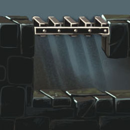
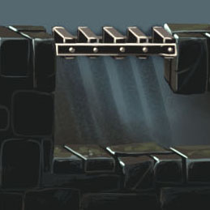
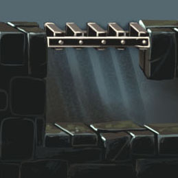

Background for a level-selector screen of a puzzle game.In-game environment for a plateformer, dungeon level.mediterranean medieval village concept.wizard school homework.Various landscapes with parallax, different weather effects and day/night cycle. Also did the integration in Unity.To infinity and beyond !


 
